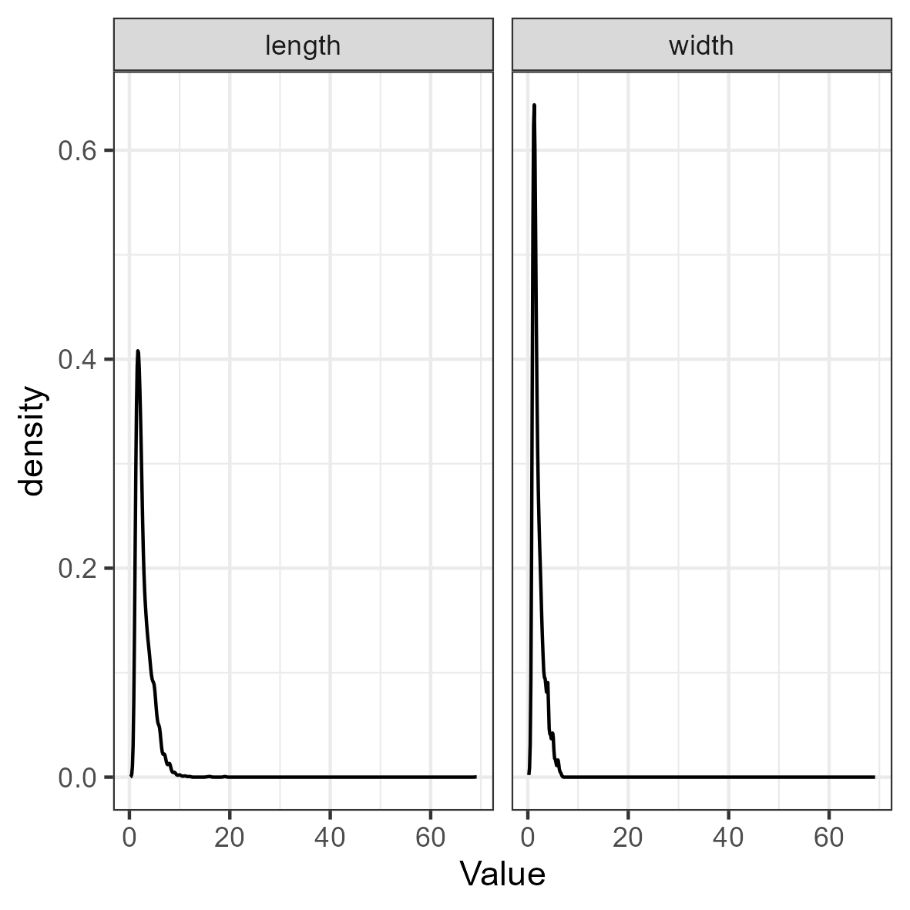
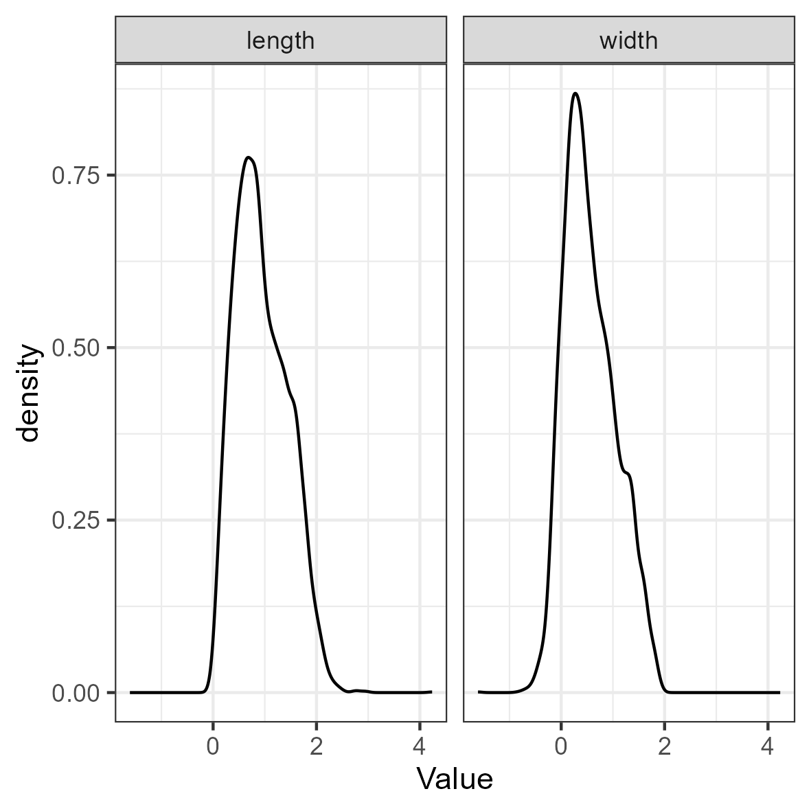

This is an example of exploratory latent class analysis (LCA) with
continuous indicators, otherwise known as latent profile analysis (LPA)
or finite Gaussian mixture modeling, using tidySEM. See Van
Lissa, C. J., Garnier-Villarreal, M., & Anadria, D. (2023).
Recommended Practices in Latent Class Analysis using the Open-Source
R-Package tidySEM. Structural Equation Modeling. https://doi.org/10.1080/10705511.2023.2250920. The
present example uses data collected by Alkema as part of a study on
ocean microplastics. The purpose of this study was to provide a more
nuanced model for the distribution of different sizes of ocean
microplastics than the commonly used normal distribution. To this end, a
mixture of normals was used. Since there is no theoretical reason to
expect a certain number of classes, this is an exploratory LCA. To view
its documentation, run the command
?tidySEM::alkema_microplastics in the R console. The
original analyses are available at https://github.com/cjvanlissa/lise_microplastics; in
this vignette, we take a different approach to the analysis to showcase
other possibilities.
Loading the Data
To load the data, simply attach the tidySEM package. For
convenience, we assign the variables used for analysis to an object
called df. As explained in the paper, the classes are quite
different for lines, films, and fragments. For this reason, we here only
use data from fragments. The indicators are fragments’ length and width
in millimeters. The sample size was not planned.
Descriptive statistics
As per the best practices, the first step in LCA is examining the
observed data. We use tidySEM::descriptives() to describe
the data numerically. Because all items are continuous, we remove
columns for categorical data to de-clutter the table:
desc <- tidySEM::descriptives(df)
desc <- desc[, c("name", "type", "n", "unique", "mean", "median",
"sd", "min", "max", "skew_2se", "kurt_2se")]
knitr::kable(desc, caption = "Descriptive statistics")| name | type | n | unique | mean | median | sd | min | max | skew_2se | kurt_2se |
|---|---|---|---|---|---|---|---|---|---|---|
| length | numeric | 5605 | 2086 | 2.9 | 2.4 | 1.9 | 1.0 | 69.2 | 137 | 2116 |
| width | numeric | 5605 | 2079 | 2.0 | 1.6 | 1.1 | 0.2 | 6.8 | 22 | 37 |
The data are correctly coded as numeric and the
distributional characteristics match the intended measurement level. The
variable scales are comparable (both in millimeters and no large
discrepancies between variances). There are no missing values; if any
variables had missing values, we would report an MCAR test with
mice::mcar(), and explain that missing data are accounted
for using FIML. Additionally, we can plot the data. The
ggplot2 function geom_density() is useful to
visualize continuous data:
df_plot <- df
names(df_plot) <- paste0("Value.", names(df_plot))
df_plot <- reshape(df_plot, varying = names(df_plot), direction = "long",
timevar = "Variable")
ggplot(df_plot, aes(x = Value)) + geom_density() + facet_wrap(~Variable) +
theme_bw()
Both the table above and the density plot indicate that the data are extremely right-skewed and kurtotic. With this in mind, it can be useful to transform and rescale the data. We will use a log transformation.
df_plot$Value <- log(df_plot$Value)
ggplot(df_plot, aes(x = Value)) + geom_density() + facet_wrap(~Variable) +
theme_bw()
The log transformation addresses the aforementioned concerns regarding skew and kurtosis. To confirm this, reshape the data to wide format and examine a scatterplot:
df <- reshape(df_plot, direction = "wide", v.names = "Value")[,
-1]
names(df) <- gsub("Value.", "", names(df), fixed = TRUE)
ggplot(df, aes(x = length, y = width)) + geom_point(alpha = 0.1) +
theme_bw()
Conducting Latent Profile Analysis
As all variables are continuous, we can use the convenience function
tidySEM::mx_profiles(), which is a wrapper for the generic
function mx_mixture() optimized for continuous indicators.
Its default settings are appropriate for LPA, assuming fixed variances
across classes and zero covariances. Its arguments are data
and number of classes. All variables in data
are included in the analysis, which is why we first selected the
indicator variables. The models are estimated using simulated annealing,
with start values determined via initial K-means clustering.
As this is an exploratory LCA, we will conduct a rather extensive search across model specifications and number of classes. We will set the maximum number of classes \(K\) to three to limit computational demands. We set a seed to ensure replicable results.
As the analysis takes a long time to compute, it is prudent to save
the results to disk immediately, so as not to lose them. For this, we
use the function saveRDS(). We can later use
res <- readRDS("res_gmm.RData") to load the analysis
from the file.
set.seed(123)
res <- mx_profiles(data = df, classes = 1:3, variances = c("equal",
"varying"), covariances = c("equal", "varying"), expand_grid = TRUE)
saveRDS(res, "res_gmm.RData")Class Enumeration
To compare the fit of the estimated models, we create a model fit
table using table_fit(). We will use the BIC for class
enumeration.
fit <- table_fit(res)First, we determine whether any models can be disqualified. There
were no indications of convergence problems during estimation, so this
is not a reason to disqualify solutions. Next, we check for global and
local identifiability. The global ratio of observations per parameter is
large, as the minimum np_ratio is 244. The smallest ratio
of class size to class-specific parameters is 18 (see
np_local), which is no cause for concern.
tbl <- fit[, c("Name", "LL", "Parameters", "BIC", "Entropy",
"prob_min", "n_min", "np_ratio", "np_local")]
names(tbl) <- c("Name", "LL", "p", "BIC", "Ent.", "p_min", "n_min",
"np_ratio", "np_local")
knitr::kable(tbl, caption = "Model fit table.")| Name | LL | p | BIC | Ent. | p_min | n_min | np_ratio | np_local |
|---|---|---|---|---|---|---|---|---|
| equal var, equal cov 1 | -3389 | 5 | 6820 | 1.00 | 1.00 | 1.00 | 1121 | 1121 |
| equal var, equal cov 2 | -3082 | 8 | 6234 | 0.72 | 0.86 | 0.31 | 701 | 494 |
| equal var, equal cov 3 | -3030 | 11 | 6155 | 0.67 | 0.71 | 0.17 | 510 | 313 |
| free var, equal cov 1 | -3389 | 5 | 6820 | 1.00 | 1.00 | 1.00 | 1121 | 1121 |
| free var, equal cov 2 | -2545 | 10 | 5176 | 0.64 | 0.51 | 0.09 | 560 | 108 |
| free var, equal cov 3 | -2257 | 15 | 4643 | 0.68 | 0.54 | 0.06 | 374 | 83 |
| equal var, free cov 1 | -3389 | 5 | 6820 | 1.00 | 1.00 | 1.00 | 1121 | 1121 |
| equal var, free cov 2 | -2552 | 9 | 5181 | 0.65 | 0.52 | 0.09 | 623 | 121 |
| equal var, free cov 3 | -2368 | 13 | 4848 | 0.56 | 0.51 | 0.02 | 431 | 27 |
| free var, free cov 1 | -3389 | 5 | 6820 | 1.00 | 1.00 | 1.00 | 1121 | 1121 |
| free var, free cov 2 | -2575 | 11 | 5245 | 0.56 | 0.81 | 0.40 | 510 | 448 |
| free var, free cov 3 | -2111 | 17 | 4370 | 0.65 | 0.51 | 0.04 | 330 | 41 |
However, note that we have a very large sample, and for many models, the smallest class comprises only a very small percentage of the total sample. Since the purpose of this analysis is to better represent the distribution of ocean microplastics, we can wonder whether it makes sense to allow for classes that only describe a small percentage of the cases. We therefore only consider solutions that capture at least 10% of the sample.
Another interesting characteristic of this data is that the BIC and
the entropy are strongly correlated. The raw correlation between these
two metrics is .66, cor(fit$BIC, fit$Entropy). If we omit
the 1-class models, for which entropy is technically not defined, the
correlation is even as high as .85,
cor(fit$BIC[!fit$Classes == 1], fit$Entropy[!fit$Classes == 1]).
This strong correlation indicates that an increase in fit comes with a decrease in class separability. This illustrates why entropy should not be treated as a model fit criterion. It also illustrates that criteria for class enumeration should be explicit, because we will likely come to a different decision depending on which criteria are used.
As mentioned before, we drop models with < 10% of cases in the smallest class:
fit <- fit[!fit$n_min < 0.1, ]If our strategy is to optimize fit, we can examine the fit table
above, or plot a scree plot for the BIC by calling
plot(fit). Note that, due to the large sample size, all ICs
give identical conclusions.
plot(fit) + theme(axis.text.x = element_text(angle = 90, vjust = 0.5,
hjust = 1))
Bivariate profile plot
Looking at the blocks of 1-4 class models for each model specification, it appears that the BIC keeps decreasing with the addition of more classes. Across the blocks, the BIC keeps decreasing with increasingly complex model specifications.
Out of the 16 models that remain after removing those with < 10% of cases in the smallest class, one model stands out: The 2-class model with free (co)variances. We thus select this as our final model.
Interpreting the Final Class Solution
We here request the estimates (est) and standardized
estimates std_est, because the latter allows us to
interpret the correlations between length and width. Note that standard
errors and p-values are relatively uninformative: With a sample size of
5606, every parameter is significantly different from zero.
res_bic <- res[["free var, free cov 2"]]
cp <- class_prob(res_bic)
results <- table_results(res_bic, columns = c("label", "est",
"std_est"))
results| label | est |
|---|---|
| Means.length | 0.65 |
| Means.width | 0.34 |
| Variances.length | 0.10 |
| Covariances.length.WITH.width | 0.09 |
| Variances.width | 0.10 |
| Means.length | 1.33 |
| Means.width | 0.86 |
| Variances.length | 0.19 |
| Covariances.length.WITH.width | 0.20 |
| Variances.width | 0.28 |
| mix2.weights[1,1] | 1.00 |
| mix2.weights[1,2] | 0.75 |
Interpreting the results is facilitated by examining a plot of the
model and data. Relevant plot functions are
plot_bivariate(), plot_density(), and
plot_profiles(). However, we omit the density plots,
because plot_bivariate() also includes them.
plot_bivariate(res_bic)
Bivariate profile plot
On the diagonal of the bivariate plot are weighted density plots: normal approximations of the density function of observed data, weighed by class probability. On the off-diagonal are plots for each pair of indicators, with the class means indicated by a point, class standard deviations indicated by lines, and covariances indicated by circles.
The bivariate and marginal plots show that the classes are not clearly separable, as also evident from the low entropy. At the same time however, it is clear that the observed distributions are non-normal, and the second class accounts for some of this non-normality (there is a smaller ‘bump’ to the right of the mode, which could be the mean of a second normal distribution). The first class (57%) accounts for smaller fragments, and the second class (43%) accounts for some of the right-skew in fragments’ length and width. We label class 1 as small fragments, and class 2 as larger fragments.
It also appears that the correlation between length and width is
stronger for small fragments than for large fragments. To test the
difference, use
wald_test(res_bic, hypothesis = "c11 = c21"). Results
indicate that the correlation is indeed significantly larger for small
fragments (\(r = .92\)) than for larger
fragments (\(r = .85\)), \(\chi^2(1) = 11.56, p < .001\). Thus,
small fragments are more coextensive than large fragments.
There are, however, concerns about the interpretability of this
solutions: the entropy is .56 and the minimum
classification probability is.81. This is because of
substantial overlap in the distributions of the two classes.
Auxiliary Analyses
Finally, we may want to compare the different classes on auxiliary
variables or models. The BCH() function applies three-step
analysis, which compares the classes using a multi-group model,
controlling for classification error. For example, we can test whether
polymer type differs between the two classes. Because polymer type is a
nominal variable, we must convert it to dummies and estimate a threshold
for each dummy:
df_pt <- mx_dummies(df_analyze$poly_type)
aux_pt <- BCH(res_bic, model = "poly_typeOther | t1
poly_typePE | t1
poly_typePP | t1",
data = df_pt)
aux_pt <- mxTryHardOrdinal(aux_pt)To obtain an omnibus likelihood ratio test of the significance of the
differences in polymer type across classes, use
lr_test(aux_pt). The results indicate that there are
significant differences in polymer types across classes, \(\Delta LL(3) = 17.14, p < .001\). The
results can be reported in probability scale using
table_prob(aux_pt). To test differences for specific
polymer types, we can use Wald tests:
wald_test(aux_pt, "class1.Thresholds[1,1] = class2.Thresholds[1,1];
class1.Thresholds[1,2] = class2.Thresholds[1,2];
class1.Thresholds[1,3] = class2.Thresholds[1,3]")The results indicate that there is no significant difference in the prevalence of “Other” polymer types across classes. However, PE is significantly more prevalent in class 1, and PP is significantly more prevalent in class 2.